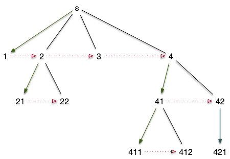

Arbres de Catalan
Les arbres de Catalan, aussi appelé arbres binaires sont certainement les arbres les plus utilisés en algorithmie car à la base de nombre de structure de données. Nous n'allons pas ici étudier ces structures de données (nous renvoyons le lecteur au cours d'algorithmie) mais nous intéresser à ces arbres pour eux-mêmes.
Commençons par les définir de façon visuelle : Un arbre de Catalan est un arbre où tout sommet a au plus 2 enfants, l'un à gauche, l'autre à droite :
Notez bien que les arbres de catalan sont une généralisation stricte des arbres planaires où chaque nœud a au plus 2 enfants. L'exemple précédent n'est pas planaire (un nœud n'a qu'un enfant droit). Pour éviter toute confusion, considérez la définition suivante, utilisant les suites finies de 0 et de 1 (d'où l'utilisation d'arbre binaires) :
Définition
L'ensemble des suites finies de 0 et de 1 est notée $\{0, 1\}^\star$ :
Avec $\epsilon$ la suite vide et $\{0, 1\}^n$ le produit cartésien de taille $n$ de $\{0, 1\}$.
Définition
Un arbre de Catalan (ou arbre binaire) $\tau$ est un sous ensemble de $\{0, 1\}^\star$ tel que :
- $\epsilon \in \tau$
- quelles que soient $u, v \in \{0, 1\}^\star$, si $uv \in \tau$ alors $u \in \tau$
Avec cette définition, les nœuds de l'arbre précédent deviennent :

Que l'on écrira souvent en abrégé, en ne gardant que le dernier élément comme pour les arbres planaires :

Parcours
Les parcours d'arbres de Catalan sont utilisés en linguistique pour analyser syntaxiquement une phrase. Un exercice classique est de créer un arbre à partir d'une expression arithmétique pour la résoudre de façon optimale en nombre d'opérations.
Les parcours en largeur et en profondeur des graphes peuvent s'utiliser tel quel pour les arbres de Catalan en partant de la racine (le nœud $\epsilon$) mais on a coutume d'en utiliser trois en algorithmie dont les deux premiers correspondent respectivement au parcours en largeur et en profondeur.
Ces algorithmes sont récursifs et utilisent le fait que nœud ou sous-arbre sont deux notions équivalente pour les arbres de Catalan.
Pour chaque parcours ci-après, donnez le résultat pour l'arbre ci-apres :

On suppose que Examen de la Racine signifie : affiche le numéro de la racine à l'écran.
Une fois ceci fait, trouvez un ordre qui lira les sommets dans l'ordre alphabétique à partir de la lettre b (en oubliant la racine).
solution
solution
- pré-ordre : a-b-h-l-m-n-i-j-k-c-d-e-g-f
- post-ordre : l-n-m-h-j-k-i-b-g-e-f-d-c-a
- en-ordre : l-h-n-m-b-j-i-k-a-c-g-e-d-f
algorithme alphabétique(racine)
examen enfant gauche
examen enfant droit
alphabétique(enfant droit)
alphabétique(enfant gauche)
pré-ordre
algorithme pré-ordre(racine)
Si la racine existe:
Examen de la racine
pré-ordre(enfant gauche)
pré-ordre(enfant droit)post-ordre
algorithme post-ordre(racine)
Si la racine existe:
post-ordre(enfant gauche)
post-ordre(enfant droit)
Examen de la racineen-ordre
algorithme en-ordre(racine)
Si la racine existe:
en-ordre(enfant gauche)
Examen de la racine
en-ordre(enfant droit)Bijection entre les arbres planaires et ceux de Catalan
Les arbres de Catalan sont en bijection avec de nombreuses structures combinatoires. Commençons par la plus célèbre les arbres planaires.
Montrons la bijection en action. La transformation d'un arbre planaire en arbre de Catalan :


- chaque nœud dans l'arbre planaire correspond à un nœuds dans l'arbre de Catalan
- l'enfant 0 d'un nœud dans l'arbre de Catalan correspond au premier enfant de son correspondant dans l'arbre planaire,
- l'enfant 1 d'un nœud dans l'arbre de Catalan correspond à l'enfant suivant de son père.
On appelle cette bijection : fille aînée (enfant 0), sœur cadette (enfant 1). et qui permet retrouver l'arbre planaire à partir de l'arbre de Catalan :

On en déduit qu'il y a autant d'arbres de catalan à $n$ sommets que d'arbres planaires à $n$ sommets :
Proposition
Le nombre $C_n$ d'arbres de Catalan à $n$ sommets est égal au nombre de chemins de Dyck de taille $2n$ :
Définition
Les $C_n$ sont appelé nombres de catalan
Le Catalan dont on parle est Eugène Charles Catalan, mathématicien Franco-Belge, et ses nombres se retrouvent partout en combinatoire.
La figure ci-après montre les arbres de Catalan de taille 0 à 4 :

On a bien :
- $C_0 = \frac{1}{1}\binom{0}{0} = 1$ (l'arbre est vide il est dessiné mais est invisible)
- $C_1 = \frac{1}{2}\binom{2}{1} = 1$
- $C_2 = \frac{1}{3}\binom{4}{2} = 2$
- $C_3 = \frac{1}{4}\binom{6}{3} = 5$
- $C_4 = \frac{1}{5}\binom{8}{4} = 14$
Analyse combinatoire
Nous allons maintenant montrer une méthode alternative pour calculer les valeurs de $C_n$. Cette méthode très générale permet de calculer nombre d'objets combinatoire et s'appelle méthode symbolique. Nous allons donner juste assez de matière pour pouvoir l'utiliser ici. Mais si le sujet vous intéresse, n'hésitez pas à aller jeter un coup d'œil au livre en lien ci-dessous :
La méthode symbolique repose sur deux outils :
- une série formelle représentant les éléments de l'ensemble à compter
- une équation récursive permettant de décrire l'ensemble à compter.
Pour cela, on va noter $\mathcal{C}$ des arbres de Catalan et $C_n$ le nombre d'arbres de Catalan à $n$ nœuds. La série formelle représentant ces nombres s'écrit :
Une série formelle n'est pas une série entière, c'est juste un moyen de représenter la suite $(C_n)_{n\geq 0}$. En revanche, si on arrive à montrer l'égalité de $C(z)$ avec une série entière avec un rayon de convergence strictement positif, alors ses coefficients seront égaux aux $C_n$.
Et c'est ce que l'on va faire maintenant en cherchant une équation récursive permettant de décrire $\mathcal{C}$ l'ensemble des arbres de catalan. Cette équation est facile à trouver puisque si $A \in \mathcal{C}$, alors :
- soit $A$ est l'arbre vide,
- soit $A$ est composé d'une racine, d'un arbre de Catalan (potentiellement vide) en enfant gauche et dun arbre de Catalan (potentiellement vide) en enfant droit.
On en déduit l'équation de récurrence :
Où :
- $+$ est l'union disjointe d'ensembles
- $\times$ est le produit cartésien
- $\{\epsilon\}$ est l'ensemble contenant l'arbre vide,
- $\{\cdot\}$ est un ensemble contenant un unique élément, le nœud racine du (sous-) arbre.
La beauté de la méthode symbolique est que cette équation de récurrence est aussi vraie pour les séries formelles représentant ces ensembles (on admettra cette proposition). Pour associer des séries formelles aux ensembles $\varnothing$ et $\cdot$, remarquons qu'une série formelle associée à un ensemble compte les éléments par taille. En effet il est facile de voir que :
Où $\vert A\vert$ vaut le nombre de nœuds de l'arbre $A$.
De là :
- comme il n'y a qu'un seul élément dans ${\epsilon}$ de taille 0, sa série formelle associée vaut $E(z) = 1$,
- comme il n'y a qu'un seul élément dans ${\cdot}$ de taille 1, sa série formelle associée vaut $E(z) = z$.
Et en injectant ces séries dans l'équation de récurrence (le $+$ additionne et le $\times$ multiplie les séries formelles) on obtient :
On a déjà presque terminé. Il suffit de trouver la fonction $C(z)$ vérifiant notre égalité. Ce qui est facile puisque c'est une des deux racines du polynôme $zX^2 - X + 1$, c'est à dire :
Comme $C(0) = C_0 = 1$ on a que (car $\frac{1 + \sqrt{1-4z}}{2z}$ tend vers $+\infty$ en $0^+$):
Cette fonction se développe en série entière avec de rayon de convergence de $\frac{1}{4}$ puisque $\sqrt{1+x} = \sum_{n\geq 0}\frac{(-1)^{n+1}}{2n-1}\frac{\binom{2n}{n}}{2^{2n}}x^n$ pour $x\in [-1, 1]$. Les coefficients de cette série sont égaux aux $C_n$.
On pourrait s'arrêter là puisqu'on connaît déjà la valeur des $C_n$ ($C_n = \frac{1}{n+1}\binom{2n}{n}$), mais pour la complétion, retrouvons le résultat attendu.
Cette méthode est remarquable puisqu'on a eu besoin de rien d'autre que la définition d'un arbre de Catalan pour obtenir le résultat. Cela vaut le coût de la connaître car elle s'applique à beaucoup d'objets combinatoires.
Choix aléatoire
Ordre et on prend un nombre au hasard. On associe un ordre qui depend du nombre d'éléments

TBD Remarquez que cet ordre permet de trouver une autre relation sur les nombres de Catalan et donnet la somme.
Arbres binaires complet
Définition
Un arbre de Catalan complet (ou arbre binaire complet) $\tau$ est :
- un arbre de catalan
- quel que soit $u \in \tau$ alors $u0 \in \tau \Leftrightarrow u1 \in \tau$
TBD dessin. TBD caractérisation symbolique. Nombre, bijection explicite avec catalan.
Montrer que pour un arbre de Catalan complet le nombre de feuille est égal au nombre de nœuds intérieurs plus 1.
solution
solution
Si chaque nœud intérieur a 2 enfants $ \sum \delta(x) = 2 + f + (n-f - 1) \cdot 3$. Comme $\vert E \vert = \vert V \vert -1 = n -1$, on assemble ces deux équations pour obtenir $n + 1 = 2f$.
TBD la hauteur de l'arbre est égale à $\log_2(f)$ si les feuilles sont à h ou h-1
Les propriétés ci-dessus montrent que si l'on veut organiser $n$ données, on n'a besoin que d'un arbre de hauteur $\log_2(n)$. Comme le chemin depuis la racine nous permet de retrouver les données, si on associe une question à chaque nœud intérieur, on peut retrouver $n$ éléments en ne posant que $\log_2(n)$ questions. C'est le principe des arbres de décisions, si utiles en apprentissage automatique.